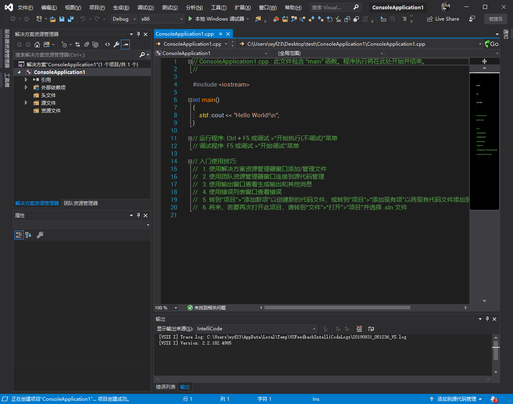
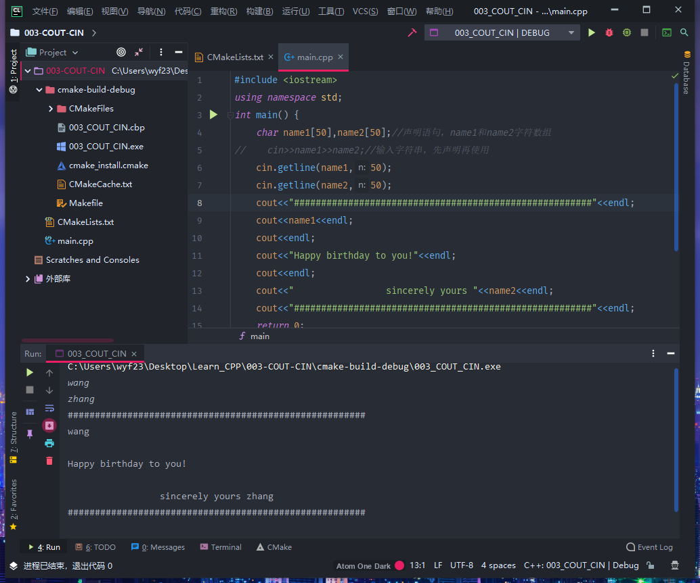
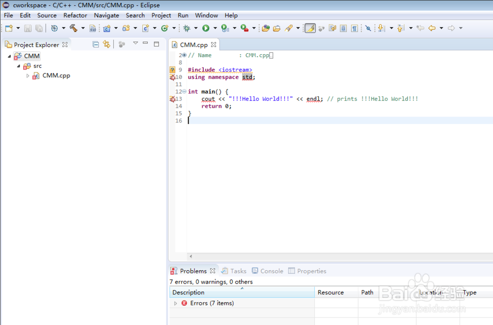
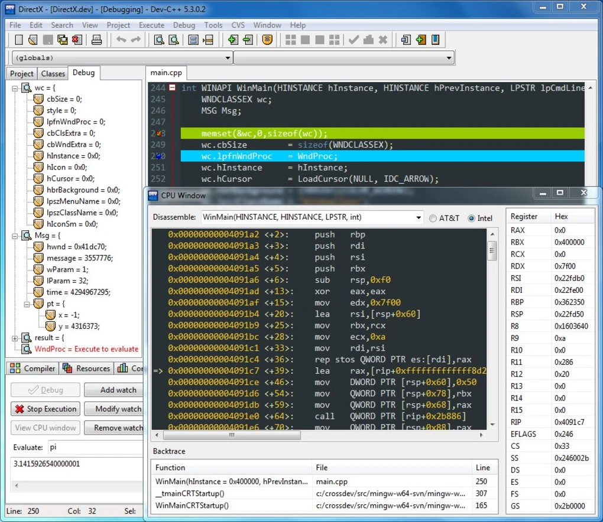

编程环境软件推荐
Visual Studio
微软开发的号称宇宙第一开发环境的Visual Studio，功能强大。

Visual Studio下载地址：传送门
VSCode
微软推出的一款跨平台编辑器，有丰富的插件库，支持绝大多数编程语言，逐渐成为最主流的编辑器。

下载地址：传送门
JetBrains Clion
JetBrains公司推出的C/C++跨平台集成开发环境，功能强大，专注开发，JetBrains开发必属精品，适合专业开发使用。

下载地址：传送门
Eclipse For C++
老牌跨平台集成开发环境，丰富的插件和简洁的开发界面。

下载地址：传送门
DEV C++
老牌C++集成开发环境，小巧强大。

DEV-C++下载地址：传送门
Code::Blocks
老牌跨平台集成开发环境，界面清爽，适合学习使用，专业开发也可以胜任。

下载地址：传送门
第一个C++程序
1 |
|
执行结果：